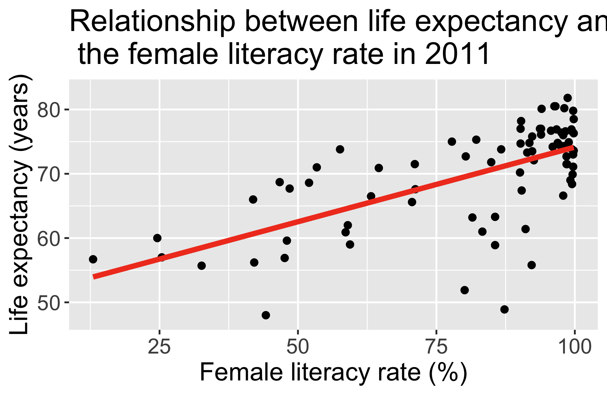
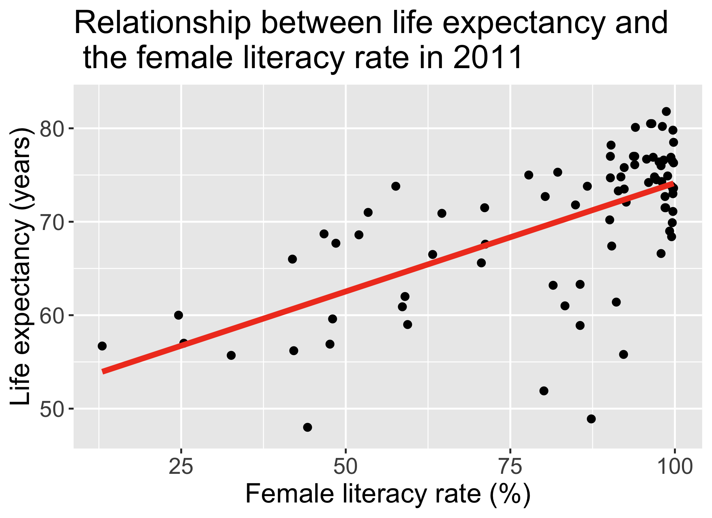
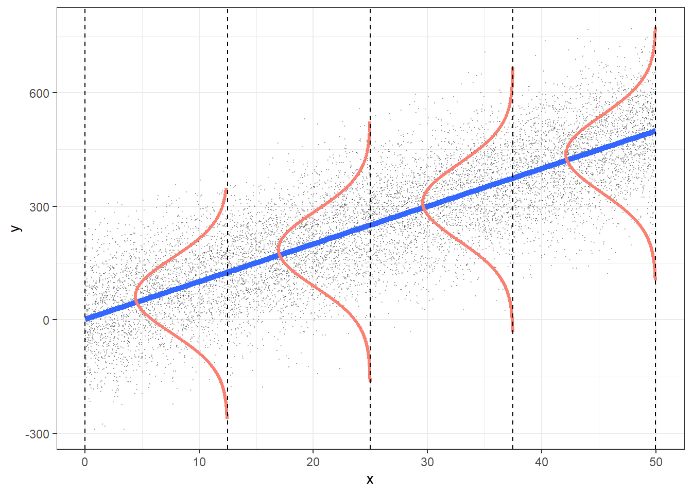
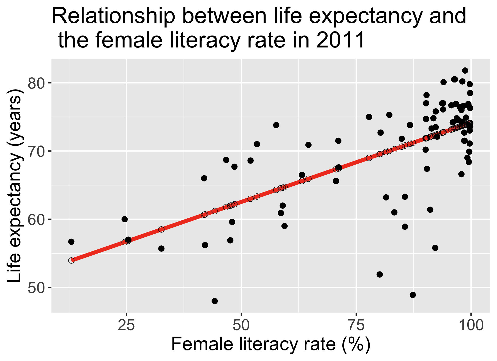
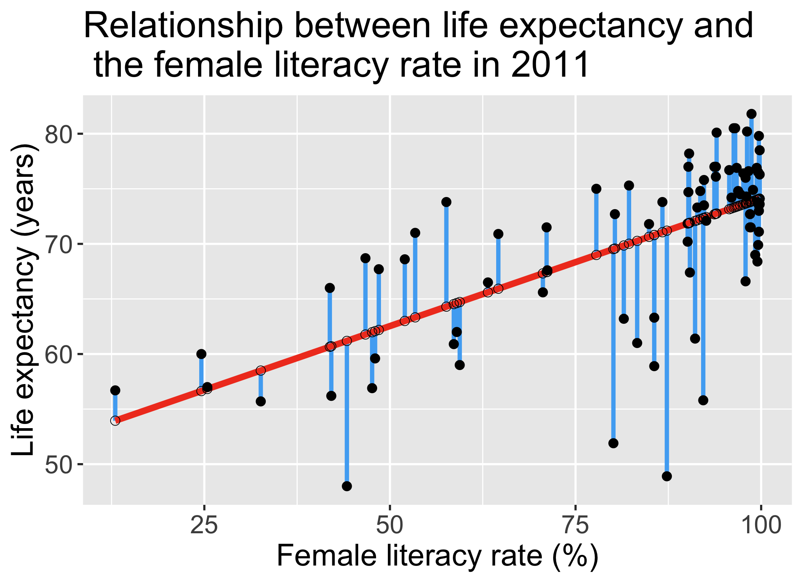
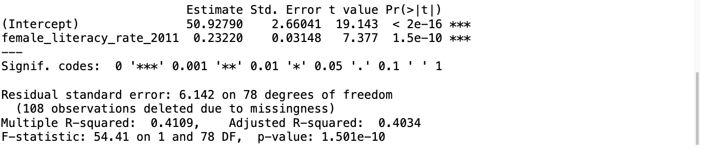
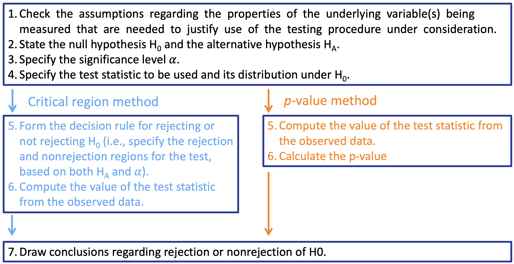

Lesson 18: Simple Linear Regression (SLR)
Learning Objectives
Identify the simple linear regression model and define statistics language for key notation
Illustrate how ordinary least squares (OLS) finds the best model parameter estimates
Apply OLS in R for simple linear regression of real data
Using a hypothesis test, determine if there is enough evidence that population slope \(\beta_1\) is not 0 (applies to \(\beta_0\) as well)
Calculate and report the estimate and confidence interval for the population slope \(\beta_1\) (applies to \(\beta_0\) as well)
Let’s start with an example
Rows: 188 Columns: 3
── Column specification ────────────────────────────────────────────────────────
Delimiter: ","
chr (1): country
dbl (2): life_expectancy_years_2011, female_literacy_rate_2011
ℹ Use `spec()` to retrieve the full column specification for this data.
ℹ Specify the column types or set `show_col_types = FALSE` to quiet this message.Warning: Using `size` aesthetic for lines was deprecated in ggplot2 3.4.0.
ℹ Please use `linewidth` instead.`geom_smooth()` using formula = 'y ~ x'Warning: Removed 108 rows containing non-finite outside the scale range
(`stat_smooth()`).Warning: Removed 108 rows containing missing values or values outside the scale range
(`geom_point()`).
Average life expectancy vs. female literacy rate
- Each point on the plot is for a different country
- \(X\) = country’s adult female literacy rate
- \(Y\) = country’s average life expectancy (years)
\[\widehat{\text{life expectancy}} = 50.9 + 0.232\cdot\text{female literacy rate}\]
Reference: How did I code that?

ggplot(gapm, aes(x = female_literacy_rate_2011,
y = life_expectancy_years_2011)) +
geom_point(size = 4) +
geom_smooth(method = "lm", se = FALSE, size = 3, colour="#F14124") +
labs(x = "Female literacy rate (%)",
y = "Life expectancy (years)",
title = "Relationship between life expectancy and \n the female literacy rate in 2011") +
theme(axis.title = element_text(size = 30),
axis.text = element_text(size = 25),
title = element_text(size = 30))`geom_smooth()` using formula = 'y ~ x'Warning: Removed 108 rows containing non-finite outside the scale range
(`stat_smooth()`).Warning: Removed 108 rows containing missing values or values outside the scale range
(`geom_point()`).
Dataset description
Data files
Cleaned:
lifeexp_femlit_2011.csvNeeds cleaning:
lifeexp_femlit_water_2011.csv
Data were downloaded from Gapminder
2011 is the most recent year with the most complete data
Life expectancy = the average number of years a newborn child would live if current mortality patterns were to stay the same.
Adult literacy rate is the percentage of people ages 15 and above who can, with understanding, read and write a short, simple statement on their everyday life.
Get to know the data (1/2)
- Load data
gapm_original <- read_csv(here::here("data", "lifeexp_femlit_2011.csv"))Rows: 188 Columns: 3
── Column specification ────────────────────────────────────────────────────────
Delimiter: ","
chr (1): country
dbl (2): life_expectancy_years_2011, female_literacy_rate_2011
ℹ Use `spec()` to retrieve the full column specification for this data.
ℹ Specify the column types or set `show_col_types = FALSE` to quiet this message.- Glimpse of the data
glimpse(gapm_original)Rows: 188
Columns: 3
$ country <chr> "Afghanistan", "Albania", "Algeria", "Andor…
$ life_expectancy_years_2011 <dbl> 56.7, 76.7, 76.7, 82.6, 60.9, 76.9, 76.0, 7…
$ female_literacy_rate_2011 <dbl> 13.0, 95.7, NA, NA, 58.6, 99.4, 97.9, 99.5,…- Note the missing values for our variables of interest
Get to know the data (2/2)
- Get a sense of the summary statistics
gapm_original %>%
select(life_expectancy_years_2011, female_literacy_rate_2011) %>%
summary() life_expectancy_years_2011 female_literacy_rate_2011
Min. :47.50 Min. :13.00
1st Qu.:64.30 1st Qu.:70.97
Median :72.70 Median :91.60
Mean :70.66 Mean :81.65
3rd Qu.:76.90 3rd Qu.:98.03
Max. :82.90 Max. :99.80
NA's :1 NA's :108 Remove missing values (1/2)
- Remove rows with missing data for life expectancy and female literacy rate
gapm <- gapm_original %>%
drop_na(life_expectancy_years_2011, female_literacy_rate_2011)
glimpse(gapm)Rows: 80
Columns: 3
$ country <chr> "Afghanistan", "Albania", "Angola", "Antigu…
$ life_expectancy_years_2011 <dbl> 56.7, 76.7, 60.9, 76.9, 76.0, 73.8, 71.0, 7…
$ female_literacy_rate_2011 <dbl> 13.0, 95.7, 58.6, 99.4, 97.9, 99.5, 53.4, 9…- No missing values now for our variables of interest
Remove missing values (2/2)
- And no more missing values when we look only at our two variables of interest
gapm %>% select(life_expectancy_years_2011, female_literacy_rate_2011) %>%
get_summary_stats()# A tibble: 2 × 13
variable n min max median q1 q3 iqr mad mean sd se
<fct> <dbl> <dbl> <dbl> <dbl> <dbl> <dbl> <dbl> <dbl> <dbl> <dbl> <dbl>
1 life_expec… 80 48 81.8 72.4 65.9 75.8 9.95 6.30 69.9 7.95 0.889
2 female_lit… 80 13 99.8 91.6 71.0 98.0 27.0 11.4 81.7 22.0 2.45
# ℹ 1 more variable: ci <dbl>Note
- Removing the rows with missing data was not needed to run the regression model.
- I did this step since later we will be calculating the standard deviations of the explanatory and response variables for just the values included in the regression model. It’ll be easier to do this if we remove the missing values now.
Poll Everywhere Question 1
Questions we can ask with a simple linear regression model
Rows: 188 Columns: 3
── Column specification ────────────────────────────────────────────────────────
Delimiter: ","
chr (1): country
dbl (2): life_expectancy_years_2011, female_literacy_rate_2011
ℹ Use `spec()` to retrieve the full column specification for this data.
ℹ Specify the column types or set `show_col_types = FALSE` to quiet this message.
`geom_smooth()` using formula = 'y ~ x'Warning: Removed 108 rows containing non-finite outside the scale range
(`stat_smooth()`).Warning: Removed 108 rows containing missing values or values outside the scale range
(`geom_point()`).
- How do we…
- calculate slope & intercept?
- interpret slope & intercept?
- do inference for slope & intercept?
- CI, p-value
- do prediction with regression line?
- CI for prediction?
- Does the model fit the data well?
- Should we be using a line to model the data?
- Should we add additional variables to the model?
- multiple/multivariable regression
\[\widehat{\text{life expectancy}} = 50.9 + 0.232\cdot\text{female literacy rate}\]
Learning Objectives
- Identify the simple linear regression model and define statistics language for key notation
Illustrate how ordinary least squares (OLS) finds the best model parameter estimates
Apply OLS in R for simple linear regression of real data
Using a hypothesis test, determine if there is enough evidence that population slope \(\beta_1\) is not 0 (applies to \(\beta_0\) as well)
Calculate and report the estimate and confidence interval for the population slope \(\beta_1\) (applies to \(\beta_0\) as well)
Simple Linear Regression Model
The (population) regression model is denoted by:
\[Y = \beta_0 + \beta_1X + \epsilon\]
Unobservable population parameters
\(\beta_0\) and \(\beta_1\) are unknown population parameters
\(\epsilon\) (epsilon) is the error about the line
It is assumed to be a random variable with a…
Normal distribution with mean 0 and constant variance \(\sigma^2\)
i.e. \(\epsilon \sim N(0, \sigma^2)\)
Observable sample data
\(Y\) is our dependent variable
- Aka outcome or response variable
\(X\) is our independent variable
- Aka predictor, regressor, exposure variable
Simple Linear Regression Model (another way to view components)
The (population) regression model is denoted by:
\[Y = \beta_0 + \beta_1X + \epsilon\]
| Component | Type | Name |
| \(Y\) | Observed | response, outcome, dependent variable |
| \(\beta_0\) | Pop. parameter | intercept |
| \(\beta_1\) | Pop. parameter | slope |
| \(X\) | Observed | predictor, covariate, independent variable |
| \(\epsilon\) | Pop. parameter | residuals, error term |
If the population parameters are unobservable, how did we get the line for life expectancy?
Note: the population model is the true, underlying model that we are trying to estimate using our sample data
- Our goal in simple linear regression is to estimate \(\beta_0\) and \(\beta_1\)
Rows: 188 Columns: 3
── Column specification ────────────────────────────────────────────────────────
Delimiter: ","
chr (1): country
dbl (2): life_expectancy_years_2011, female_literacy_rate_2011
ℹ Use `spec()` to retrieve the full column specification for this data.
ℹ Specify the column types or set `show_col_types = FALSE` to quiet this message.
`geom_smooth()` using formula = 'y ~ x'Warning: Removed 108 rows containing non-finite outside the scale range
(`stat_smooth()`).Warning: Removed 108 rows containing missing values or values outside the scale range
(`geom_point()`).
Poll Everywhere Question 2
Regression line = best-fit line
\[\widehat{Y} = \widehat{\beta}_0 + \widehat{\beta}_1 X \]
- \(\widehat{Y}\) is the predicted outcome for a specific value of \(X\)
- \(\widehat{\beta}_0\) is the intercept of the best-fit line
- \(\widehat{\beta}_1\) is the slope of the best-fit line, i.e., the increase in \(\widehat{Y}\) for every increase of one (unit increase) in \(X\)
- slope = rise over run
Rows: 188 Columns: 3
── Column specification ────────────────────────────────────────────────────────
Delimiter: ","
chr (1): country
dbl (2): life_expectancy_years_2011, female_literacy_rate_2011
ℹ Use `spec()` to retrieve the full column specification for this data.
ℹ Specify the column types or set `show_col_types = FALSE` to quiet this message.
`geom_smooth()` using formula = 'y ~ x'Warning: Removed 108 rows containing non-finite outside the scale range
(`stat_smooth()`).Warning: Removed 108 rows containing missing values or values outside the scale range
(`geom_point()`).
Simple Linear Regression Model
Population regression model
\[Y = \beta_0 + \beta_1X + \epsilon\]
Components
| \(Y\) | response, outcome, dependent variable |
| \(\beta_0\) | intercept |
| \(\beta_1\) | slope |
| \(X\) | predictor, covariate, independent variable |
| \(\epsilon\) | residuals, error term |
Estimated regression line
\[\widehat{Y} = \widehat{\beta}_0 + \widehat{\beta}_1X\]
Components
| \(\widehat{Y}\) | estimated expected response given predictor \(X\) |
| \(\widehat{\beta}_0\) | estimated intercept |
| \(\widehat{\beta}_1\) | estimated slope |
| \(X\) | predictor, covariate, independent variable |
Learning Objectives
- Identify the simple linear regression model and define statistics language for key notation
- Illustrate how ordinary least squares (OLS) finds the best model parameter estimates
Apply OLS in R for simple linear regression of real data
Using a hypothesis test, determine if there is enough evidence that population slope \(\beta_1\) is not 0 (applies to \(\beta_0\) as well)
Calculate and report the estimate and confidence interval for the population slope \(\beta_1\) (applies to \(\beta_0\) as well)
It all starts with a residual…
Recall, one characteristic of our population model was that the residuals, \(\epsilon\), were Normally distributed: \(\epsilon \sim N(0, \sigma^2)\)
In our population regression model, we had: \[Y = \beta_0 + \beta_1X + \epsilon\]
We can also take the average (expected) value of the population model
We take the expected value of both sides and get:
\[\begin{aligned} E[Y] & = E[\beta_0 + \beta_1X + \epsilon] \\ E[Y] & = E[\beta_0] + E[\beta_1X] + E[\epsilon] \\ E[Y] & = \beta_0 + \beta_1X + E[\epsilon] \\ E[Y|X] & = \beta_0 + \beta_1X \\ \end{aligned}\]
- We call \(E[Y|X]\) the expected value of \(Y\) given \(X\)

So now we have two representations of our population model
With observed \(Y\) values and residuals:
\[Y = \beta_0 + \beta_1X + \epsilon\]
With the population expected value of \(Y\) given \(X\):
\[E[Y|X] = \beta_0 + \beta_1X\]
Using the two forms of the model, we can figure out a formula for our residuals:
\[\begin{aligned} Y & = (\beta_0 + \beta_1X) + \epsilon \\ Y & = E[Y|X] + \epsilon \\ Y - E[Y|X] & = \epsilon \\ \epsilon & = Y - E[Y|X] \end{aligned}\]
And so we have our true, population model, residuals!
This is an important fact! For the population model, the residuals: \(\epsilon = Y - E[Y|X]\)
Back to our estimated model
We have the same two representations of our estimated/fitted model:
With observed values:
\[Y = \widehat{\beta}_0 + \widehat{\beta}_1X + \widehat{\epsilon}\]
With the estimated expected value of \(Y\) given \(X\):
\[\begin{aligned} \widehat{E}[Y|X] & = \widehat{\beta}_0 + \widehat{\beta}_1X \\ \widehat{E[Y|X]} & = \widehat{\beta}_0 + \widehat{\beta}_1X \\ \widehat{Y} & = \widehat{\beta}_0 + \widehat{\beta}_1X \\ \end{aligned}\]
Using the two forms of the model, we can figure out a formula for our estimated residuals:
\[\begin{aligned} Y & = (\widehat{\beta}_0 + \widehat{\beta}_1X) + \widehat\epsilon \\ Y & = \widehat{Y} + \widehat\epsilon \\ \widehat\epsilon & = Y - \widehat{Y} \end{aligned}\]
This is an important fact! For the estimated/fitted model, the residuals: \(\widehat\epsilon = Y - \widehat{Y}\)
Individual \(i\) residuals in the estimated/fitted model
- Observed values for each individual \(i\): \(Y_i\)
- Value in the dataset for individual \(i\)
- Fitted value for each individual \(i\): \(\widehat{Y}_i\)
- Value that falls on the best-fit line for a specific \(X_i\)
- If two individuals have the same \(X_i\), then they have the same \(\widehat{Y}_i\)

Individual \(i\) residuals in the estimated/fitted model
Observed values for each individual \(i\): \(Y_i\)
- Value in the dataset for individual \(i\)
Fitted value for each individual \(i\): \(\widehat{Y}_i\)
- Value that falls on the best-fit line for a specific \(X_i\)
- If two individuals have the same \(X_i\), then they have the same \(\widehat{Y}_i\)
Residual for each individual: \(\widehat\epsilon_i = Y_i - \widehat{Y}_i\)
- Difference between the observed and fitted value

Poll Everywhere Question 3
So what do we do with the residuals?
We want to minimize the sum of residuals
- Aka minimize the difference between the observed \(Y\) value and the estimated expected response given the predictor ( \(\widehat{E}[Y|X]\) )
We can use ordinary least squares (OLS) to do this in linear regression!
Idea behind this: reduce the total error between the fitted line and the observed point (error between is called residuals)
- Vague use of total error: more precisely, we want to reduce the sum of squared errors
- Think back to my R Shiny app!
- We need to mathematically define this!
Note: there are other ways to estimate the best-fit line!!
- Example: Maximum likelihood estimation
Break
Learning Objectives
Identify the simple linear regression model and define statistics language for key notation
Illustrate how ordinary least squares (OLS) finds the best model parameter estimates
- Apply OLS in R for simple linear regression of real data
Using a hypothesis test, determine if there is enough evidence that population slope \(\beta_1\) is not 0 (applies to \(\beta_0\) as well)
Calculate and report the estimate and confidence interval for the population slope \(\beta_1\) (applies to \(\beta_0\) as well)
Setting up for ordinary least squares
- Sum of Squared Errors (SSE)
\[ \begin{aligned} SSE & = \displaystyle\sum^n_{i=1} \widehat\epsilon_i^2 \\ SSE & = \displaystyle\sum^n_{i=1} (Y_i - \widehat{Y}_i)^2 \\ SSE & = \displaystyle\sum^n_{i=1} (Y_i - (\widehat{\beta}_0+\widehat{\beta}_1X_i))^2 \\ SSE & = \displaystyle\sum^n_{i=1} (Y_i - \widehat{\beta}_0-\widehat{\beta}_1X_i)^2 \end{aligned}\]
Things to use
\(\widehat\epsilon_i = Y_i - \widehat{Y}_i\)
\(\widehat{Y}_i = \widehat\beta_0 + \widehat\beta_1X_i\)
Then we want to find the estimated coefficient values that minimize the SSE!
Poll Everywhere Question 4
So how do I find the coefficient estimates that minimize the SSE?
Regression in R: lm()
- Let’s discuss the syntax of this function
model1 <- lm(life_expectancy_years_2011 ~ female_literacy_rate_2011,
data = gapm)Regression in R: lm() + summary()
model1 <- lm(life_expectancy_years_2011 ~ female_literacy_rate_2011,
data = gapm)
summary(model1)
Call:
lm(formula = life_expectancy_years_2011 ~ female_literacy_rate_2011,
data = gapm)
Residuals:
Min 1Q Median 3Q Max
-22.299 -2.670 1.145 4.114 9.498
Coefficients:
Estimate Std. Error t value Pr(>|t|)
(Intercept) 50.92790 2.66041 19.143 < 2e-16 ***
female_literacy_rate_2011 0.23220 0.03148 7.377 1.5e-10 ***
---
Signif. codes: 0 '***' 0.001 '**' 0.01 '*' 0.05 '.' 0.1 ' ' 1
Residual standard error: 6.142 on 78 degrees of freedom
(108 observations deleted due to missingness)
Multiple R-squared: 0.4109, Adjusted R-squared: 0.4034
F-statistic: 54.41 on 1 and 78 DF, p-value: 1.501e-10
Regression in R: lm() + tidy()
tidy(model1) %>%
gt() %>%
tab_options(table.font.size = 45)| term | estimate | std.error | statistic | p.value |
|---|---|---|---|---|
| (Intercept) | 50.9278981 | 2.66040695 | 19.142898 | 3.325312e-31 |
| female_literacy_rate_2011 | 0.2321951 | 0.03147744 | 7.376557 | 1.501286e-10 |
- Regression equation for our model (which we saw a looong time ago):
\[\widehat{\text{life expectancy}} = 50.9 + 0.232\cdot\text{female literacy rate}\]
How do we interpret the coefficients?
\[\widehat{\text{life expectancy}} = 50.9 + 0.232\cdot\text{female literacy rate}\]
- Intercept
- The expected outcome for the \(Y\)-variable when the \(X\)-variable is 0
- Example: The expected/average life expectancy is 50.9 years for a country with 0% female literacy.
- Slope
For every increase of 1 unit in the \(X\)-variable, there is an expected increase of, on average, \(\widehat\beta_1\) units in the \(Y\)-variable.
We only say that there is an expected increase and not necessarily a causal increase.
Example: For every 1 percent increase in the female literacy rate, life expectancy increases, on average, 0.232 years.
- You can say either expected OR average
Learning Objectives
Identify the simple linear regression model and define statistics language for key notation
Illustrate how ordinary least squares (OLS) finds the best model parameter estimates
Apply OLS in R for simple linear regression of real data
- Using a hypothesis test, determine if there is enough evidence that population slope \(\beta_1\) is not 0 (applies to \(\beta_0\) as well)
- Calculate and report the estimate and confidence interval for the population slope \(\beta_1\) (applies to \(\beta_0\) as well)
Steps in hypothesis testing

General steps for hypothesis test for population slope \(\beta_1\) (t-test)
- For today’s class, we are assuming that we have met the underlying assumptions (checked in our Model Evaluation step)
- State the null hypothesis.
Often, we are curious if the coefficient is 0 or not:
\[\begin{align} H_0 &: \beta_1 = 0\\ \text{vs. } H_A&: \beta_1 \neq 0 \end{align}\]
- Specify the significance level.
Often we use \(\alpha = 0.05\)
- Specify the test statistic and its distribution under the null
The test statistic is \(t\), and follows a Student’s t-distribution.
- Compute the value of the test statistic
The calculated test statistic for \(\widehat\beta_1\) is
\[t = \frac{ \widehat\beta_1 - \beta_1}{ \text{SE}_{\widehat\beta_1}} = \frac{ \widehat\beta_1}{ \text{SE}_{\widehat\beta_1}}\]
when we assume \(H_0: \beta_1 = 0\) is true.
- Calculate the p-value
We are generally calculating: \(2\cdot P(T > t)\)
- Write conclusion for hypothesis test
We (reject/fail to reject) the null hypothesis that the slope is 0 at the \(100\alpha\%\) significiance level. There is (sufficient/insufficient) evidence that there is significant association between (\(Y\)) and (\(X\)) (p-value = \(P(T > t)\)).
Some important notes
- Today we are discussing the hypothesis test for a single coefficient
The test statistic for a single coefficient follows a Student’s t-distribution
- It can also follow an F-distribution, but we will discuss this more with multiple linear regression and multi-level categorical covariates
Single coefficient testing can be done on any coefficient, but it is most useful for continuous covariates or binary covariates
- This is because testing the single coefficient will still tell us something about the overall relationship between the covariate and the outcome
- We will talk more about this with multiple linear regression and multi-level categorical covariates
Poll Everywhere Question 5
Life expectancy example: hypothesis test for population slope \(\beta_1\) (1/4)
- Steps 1-4 are setting up our hypothesis test: not much change from the general steps
- For today’s class, we are assuming that we have met the underlying assumptions (checked in our Model Evaluation step)
- State the null hypothesis.
We are testing if the slope is 0 or not:
\[\begin{align} H_0 &: \beta_1 = 0\\ \text{vs. } H_A&: \beta_1 \neq 0 \end{align}\]
- Specify the significance level.
Often we use \(\alpha = 0.05\)
- Specify the test statistic and its distribution under the null
The test statistic is \(t\), and follows a Student’s t-distribution.
Life expectancy example: hypothesis test for population slope \(\beta_1\) (2/4)
- Compute the value of the test statistic
- Option 1: Calculate the test statistic using the values in the regression table
# recall model1_b1 is regression table restricted to b1 row
model1_b1 <-tidy(model1) %>% filter(term == "female_literacy_rate_2011")
model1_b1 %>% gt() %>%
tab_options(table.font.size = 40) %>% fmt_number(decimals = 2)| term | estimate | std.error | statistic | p.value |
|---|---|---|---|---|
| female_literacy_rate_2011 | 0.23 | 0.03 | 7.38 | 0.00 |
(TestStat_b1 <- model1_b1$estimate / model1_b1$std.error)[1] 7.376557- Option 2: Get the test statistic value (\(t^*\)) from
R
model1_b1 %>% gt() %>%
tab_options(table.font.size = 40) %>% fmt_number(decimals = 2)| term | estimate | std.error | statistic | p.value |
|---|---|---|---|---|
| female_literacy_rate_2011 | 0.23 | 0.03 | 7.38 | 0.00 |
Life expectancy example: hypothesis test for population slope \(\beta_1\) (3/4)
- Calculate the p-value
The \(p\)-value is the probability of obtaining a test statistic just as extreme or more extreme than the observed test statistic assuming the null hypothesis \(H_0\) is true
We know the probability distribution of the test statistic (the null distribution) assuming \(H_0\) is true
Statistical theory tells us that the test statistic \(t\) can be modeled by a \(t\)-distribution with \(df = n-2\).
- We had 80 countries’ data, so \(n=80\)
Option 1: Use
pt()and our calculated test statistic
(pv = 2*pt(TestStat_b1, df=80-2, lower.tail=F))[1] 1.501286e-10- Option 2: Use the regression table output
model1_b1 %>% gt() %>%
tab_options(table.font.size = 40)| term | estimate | std.error | statistic | p.value |
|---|---|---|---|---|
| female_literacy_rate_2011 | 0.2321951 | 0.03147744 | 7.376557 | 1.501286e-10 |
Life expectancy example: hypothesis test for population slope \(\beta_1\) (4/4)
- Write conclusion for the hypothesis test
We reject the null hypothesis that the slope is 0 at the \(5\%\) significance level. There is sufficient evidence that there is significant association between female life expectancy and female literacy rates (p-value < 0.0001).
Life expectancy ex: hypothesis test for population intercept \(\beta_0\) (1/4)
- Steps 1-4 are setting up our hypothesis test: not much change from the general steps
- For today’s class, we are assuming that we have met the underlying assumptions (checked in our Model Evaluation step)
- State the null hypothesis.
We are testing if the intercept is 0 or not:
\[\begin{align} H_0 &: \beta_0 = 0\\ \text{vs. } H_A&: \beta_0 \neq 0 \end{align}\]
- Specify the significance level
Often we use \(\alpha = 0.05\)
- Specify the test statistic and its distribution under the null
This is the same as the slope. The test statistic is \(t\), and follows a Student’s t-distribution.
Life expectancy ex: hypothesis test for population intercept \(\beta_0\) (2/4)
- Compute the value of the test statistic
- Option 1: Calculate the test statistic using the values in the regression table
# recall model1_b1 is regression table restricted to b1 row
model1_b0 <-tidy(model1) %>% filter(term == "(Intercept)")
model1_b0 %>% gt() %>%
tab_options(table.font.size = 40) %>% fmt_number(decimals = 2)| term | estimate | std.error | statistic | p.value |
|---|---|---|---|---|
| (Intercept) | 50.93 | 2.66 | 19.14 | 0.00 |
(TestStat_b0 <- model1_b0$estimate / model1_b0$std.error)[1] 19.1429- Option 2: Get the test statistic value (\(t^*\)) from
R
model1_b0 %>% gt() %>%
tab_options(table.font.size = 40) %>% fmt_number(decimals = 2)| term | estimate | std.error | statistic | p.value |
|---|---|---|---|---|
| (Intercept) | 50.93 | 2.66 | 19.14 | 0.00 |
Life expectancy ex: hypothesis test for population intercept \(\beta_0\) (3/4)
- Calculate the p-value
- Option 1: Use
pt()and our calculated test statistic
(pv = 2*pt(TestStat_b0, df=80-2, lower.tail=F))[1] 3.325312e-31
- Option 2: Use the regression table output
model1_b0 %>% gt() %>%
tab_options(table.font.size = 40)| term | estimate | std.error | statistic | p.value |
|---|---|---|---|---|
| (Intercept) | 50.9279 | 2.660407 | 19.1429 | 3.325312e-31 |
Life expectancy ex: hypothesis test for population intercept \(\beta_0\) (4/4)
- Write conclusion for the hypothesis test
We reject the null hypothesis that the intercept is 0 at the \(5\%\) significance level. There is sufficient evidence that the intercept for the association between average female life expectancy and female literacy rates is different from 0 (p-value < 0.0001).
- Note: if we fail to reject \(H_0\), then we could decide to remove the intercept from the model to force the regression line to go through the origin (0,0) if it makes sense to do so for the application.
Learning Objectives
Identify the simple linear regression model and define statistics language for key notation
Illustrate how ordinary least squares (OLS) finds the best model parameter estimates
Apply OLS in R for simple linear regression of real data
Using a hypothesis test, determine if there is enough evidence that population slope \(\beta_1\) is not 0 (applies to \(\beta_0\) as well)
- Calculate and report the estimate and confidence interval for the population slope \(\beta_1\) (applies to \(\beta_0\) as well)
Inference for the population slope: hypothesis test and CI
Population model
line + random “noise”
\[Y = \beta_0 + \beta_1 \cdot X + \varepsilon\] with \(\varepsilon \sim N(0,\sigma^2)\)
\(\sigma^2\) is the variance of the residuals
Sample best-fit (least-squares) line
\[\widehat{Y} = \widehat{\beta}_0 + \widehat{\beta}_1 \cdot X \]
Note: Some sources use \(b\) instead of \(\widehat{\beta}\)
We have two options for inference:
- Conduct the hypothesis test
\[\begin{align} H_0 &: \beta_1 = 0\\ \text{vs. } H_A&: \beta_1 \neq 0 \end{align}\]
Note: R reports p-values for 2-sided tests
- Construct a 95% confidence interval for the population slope \(\beta_1\)
Confidence interval for population slope \(\beta_1\)
Recall the general CI formula:
\[\widehat{\beta}_1 \pm t_{\alpha, n-2}^* \cdot SE_{\widehat{\beta}_1}\]
To construct the confidence interval, we need to:
Set our \(\alpha\)-level
Find \(\widehat\beta_1\)
Calculate the \(t_{n-2}^*\)
Calculate \(SE_{\widehat{\beta}_1}\)
Calculate CI for population slope \(\beta_1\) (1/2)
\[\widehat{\beta}_1 \pm t^*\cdot SE_{\beta_1}\]
where \(t^*\) is the \(t\)-distribution critical value with \(df = n -2\).
- Option 1: Calculate using each value
Save values needed for CI:
b1 <- model1_b1$estimate
SE_b1 <- model1_b1$std.errornobs(model1) # sample size n[1] 80(tstar <- qt(.975, df = 80-2))[1] 1.990847Use formula to calculate each bound
(CI_LB <- b1 - tstar*SE_b1)[1] 0.1695284(CI_UB <- b1 + tstar*SE_b1)[1] 0.2948619Calculate CI for population slope \(\beta_1\) (2/2)
\[\widehat{\beta}_1 \pm t^*\cdot SE_{\beta_1}\]
where \(t^*\) is the \(t\)-distribution critical value with \(df = n -2\).
- Option 2: Use the regression table
tidy(model1, conf.int = T) %>% gt() %>%
tab_options(table.font.size = 40) %>% fmt_number(decimals = 3)| term | estimate | std.error | statistic | p.value | conf.low | conf.high |
|---|---|---|---|---|---|---|
| (Intercept) | 50.928 | 2.660 | 19.143 | 0.000 | 45.631 | 56.224 |
| female_literacy_rate_2011 | 0.232 | 0.031 | 7.377 | 0.000 | 0.170 | 0.295 |
Reporting the coefficient estimate of the population slope
When we report our results to someone else, we don’t usually show them our full hypothesis test
- In an informal setting, someone may want to see it
Typically, we report the estimate with the confidence interval
- From the confidence interval, your audience can also deduce the results of a hypothesis test
Once we found our CI, we often just write the interpretation of the coefficient estimate:
General statement for population slope inference
For every increase of 1 unit in the \(X\)-variable, there is an expected average increase of \(\widehat\beta_1\) units in the \(Y\)-variable (95%: LB, UB).
- In our example: For every 1% increase in female literacy rate, life expectancy increases, on average, 0.232 years (95% CI: 0.170, 0.295).
Many options for how to word our results (Reference)
- In our example: For every 1% increase in female literacy rate, life expectancy increases, on average, 0.232 years (95% CI: 0.170, 0.295).
- In our example: For every 1% increase in female literacy rate, life expectancy is expected to increase 0.232 years (95% CI: 0.170, 0.295).
- In our example: For every 1% increase in female literacy rate, the average life expectancy increases 0.232 years (95% CI: 0.170, 0.295).
Poll Everywhere Question 6
For reference: quick CI for \(\beta_0\)
- Calculate CI for population intercept \(\beta_0\): \(\widehat{\beta}_0 \pm t^*\cdot SE_{\beta_0}\)
where \(t^*\) is the \(t\)-distribution critical value with \(df = n -2\)
- Use the regression table
tidy(model1, conf.int = T) %>% gt() %>%
tab_options(table.font.size = 40) %>% fmt_number(decimals = 3)| term | estimate | std.error | statistic | p.value | conf.low | conf.high |
|---|---|---|---|---|---|---|
| (Intercept) | 50.928 | 2.660 | 19.143 | 0.000 | 45.631 | 56.224 |
| female_literacy_rate_2011 | 0.232 | 0.031 | 7.377 | 0.000 | 0.170 | 0.295 |
General statement for population intercept inference
The expected outcome for the \(Y\)-variable is (\(\widehat\beta_0\)) when the \(X\)-variable is 0 (95% CI: LB, UB).
- For example: The average life expectancy is 50.9 years when the female literacy rate is 0 (95% CI: 45.63, 56.22).